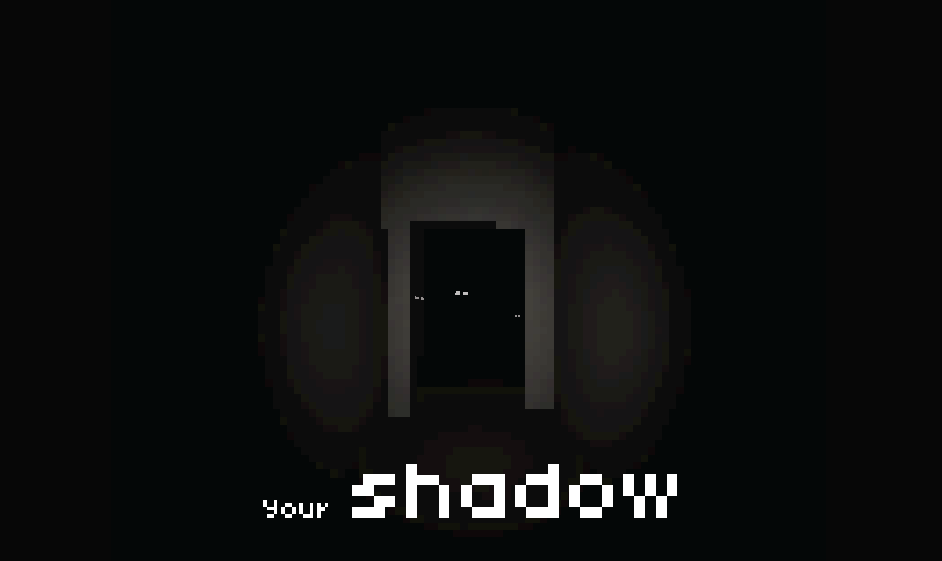

Psychological horror — narrative experience

Your Shadow is a psychological horror game focused on narrative, pacing, and immersive environmental design. The project experiments with sound, lighting, and subtle player-driven narrative reveals.